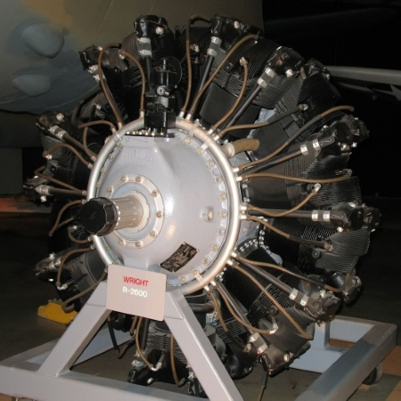

The R-2600 Twin Cyclone was a powerful engine used by the United States in World War 2. It was built using 14 cylinders arranged in 2 rows. It could produce up to 1,300 kW of power and it weighed approximately 2000 lbs. It was used on the F6F Hellcat, A-20 Havoc, B-25 Mitchell, TBF Avenger, SB2C Helldiver, and PBM Mariner.